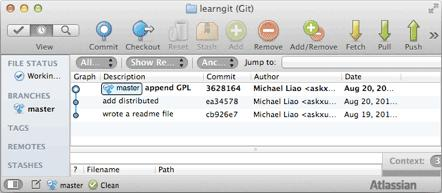

现在，你已经学会了修改文件，然后把修改提交到 Git 版本库，现在，再练习一次，修改 readme.txt 文件如下：
Git is a distributed version control system. |
然后尝试提交：
$ git add readme.txt |
像这样，你不断对文件进行修改，然后不断提交修改到版本库库里，就好比玩 RPG 游戏时，每通过一关就会自动把游戏状态存盘，如果某一关没过去，你还可以选择读取前一关的状态。有些时候，在打 Boss 之前，你会手动存盘以便万一打 Boss 失败了，可以从最近的地方重新开始。Git 也是一样，每当你觉得文件修改到一定程度的时候，就可以「保存一个快照」，这个快照在 Git 中被称为 commit。一旦你把文件改乱了，还可以从最近的一个 commit 恢复，然后继续工作，而不是把几个月的工作成果全部丢失。
现在，我们回顾一下 readme.txt 文件一共有几个版本被提交到 Git 仓库里了：
版本 1：wrote a readme file
Git is a version control system. |
版本 2：add distributed
Git is a distributed version control system. |
版本 3：append GPL
Git is a distributed version control system. |
当然了，在实际工作中，我们脑子里怎么可能记得一个几千行的文件每次都改了什么内容，不然要版本控制系统干什么。版本控制系统肯定有某个命令可以告诉我们历史记录。在 Git 中，我们用git log命令查看：
$ git log |
git log命令显示从最近到最远的提交日志，我们可以看到 3 次提交，最近的一次是 append GPL，上一次是 add distributed，最早的一次是 wrote a readme file。
如果嫌输出信息太多，看得眼花缭乱的，可以试试加上--pretty-oneline参数：
$ git log --pretty=oneline |
需要友情提示的是，你看到的一大串类似1094abd...的是 commit id（版本号），和 SVN 不一样，Git 的 commit id 不是 1，2，3……递增的数字，而是一个 SHA1 计算出来的非常大的数字，用十六进制表示，而且你看到的 commit id 和我的肯定不一样，以你自己的为准。为什么 commit id 需要这么大一串数字表示呢？因为 Git 是分布式的版本控制系统，后面我们还要研究多人在同一个版本库里工作，如果大家都用 1，2，3……作为版本号，那肯定就冲突了。
每提交一个新版本，实际上 Git 就会把它们自动串成一条时间线。如果使用可视化工具查看 Git 历史，就可以清楚地看到提交历史的时间线：

好了，现在我们启动时光穿梭机，准备把 readme.txt 回退到上一个版本，也就是 add distributed 的那个版本，怎么做呢？
首先，Git 必须知道当前版本是哪个版本，在 Git 中，用HEAD表示当前版本，也就是最新提交的1094adb...（注意我的提交 ID 和你的肯定不一样），上一个版本就是HEAD^，上上一个版本就是HEAD^^，当然往上 100 个版本写 100 个^比较容易数不过来，所以写成HEAD~100。
现在，我们要把当前版本 append GPL 回退到上一个版本 add distributed，就可以使用git reset命令：
$ git reset --hard HEAD^ |
--hard参数有啥意义？这个后面再讲，现在你先放心使用。
看看 readme.txt 的内容是不是版本 add distributed：
$ cat readme.txt |
果然被还原了。
还可以继续回退到上一个版本 wrote a readme file，不过且慢，让我们用git log再看看现在版本库的状态：
$ git log |
最新的那个版本 append GPL 已经看不到了！好比你从 21 世纪坐时光穿梭机到了 19 世纪，想回去已经回不去了，怎么办？
办法其实还是有的，只要上面的命令行窗口还没有被关掉，你就可以顺着往上找，找到那个 append GPL 的 commit id 是1094adb...，于是就可以指定回到未来的某个版本：
$ git reset --hard 1094a |
版本号没必要写全，前几位就可以了，Git 会自动去找。当然也不能只写前一两位，因为 Git 可能会找到多个版本号，就无法确定是哪一个了。
再小心翼翼地看看 readme.txt 的内容：
$ cat readme.txt |
果然，我胡汉三又回来了。
Git 的版本回退速度非常快，因为 Git 在内部有个指向当前版本的 HEAD 指针，当你回退版本的时候，Git 仅仅是把 HEAD 从指向 appdend GPL：
graph TD A[HEAD] --> B[append GPL] A --- C[add distributed] A --- D[wrote a readme file]
改为指向 add distributed：
graph TD A[HEAD] --- B[append GPL] A --> C[add distributed] A --- D[wrote a readme file]
然后顺便把工作区的文件更新了。所以你让 HEAD 指向哪个版本号，你就把当前版本号定位在哪。
现在，你回退到了某个版本，关掉了电脑，第二天早上就后悔了，想恢复到新版本怎么办？找不到新版本的 commit id 怎么办？
在 Git 中，总是有后悔药可以吃的。当你用git reset --hard HEAD^回退到 add distributed 版本时，再想恢复到 append GPL，就必须找到 append GPL 的 commit id。Git 提供了一个命令git reflog用来记录你的每一次命令：
$ git reflog |
终于舒了口气，从输出可知，append GPL 的 commit id 是 1094adb，现在，你又可以乘坐时光机回到未来了。
小结
- HEAD 指向的版本就是当前版本，因此，Git 允许我们在版本的历史之间穿梭，使用命令
git reset --hard commit id。 - 穿梭前，用
git log可以查看提交历史，以便确定要回退到哪个版本。 - 要重返未来，用
git reflog查看命令历史，以便确定要回到未来的哪个版本。